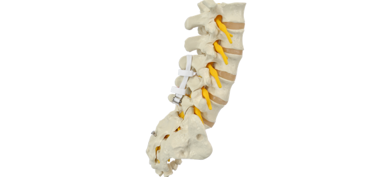
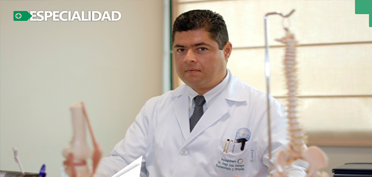
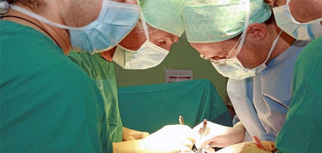
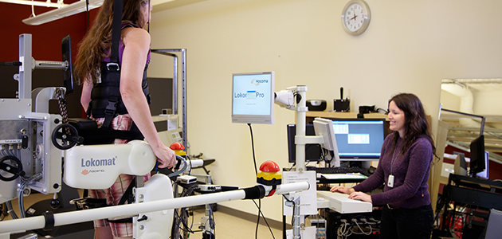

Uso del espaciador interespinoso sin disectomia lumbar con tecnica minima invasiva.
Autores Dr. Jesús Alfonso Cao Romero Arroyo, Dr. Noé González Plata

Objetivo: Valorar la mejoría clínica en cuanto al dolor discogenico y facetario y la calidad de vida del paciente postoperado de espaciador interespinoso sin disectomia a la semana, 1, 3, 6 y a los 12 meses de acuerdo al EVA y el OSWESTRY así como evaluar la evolución clínica según el IMC, el tamaño de la hernia con la clasificación MSU, el defecto Modic en la RM y el cambio que existe en el índice de Cobb en las RX.
→ Ver el articulo completo.
Cifoplastia con radiofrecuencia "En el tratamiento de fracturas por vertebrales por compresión.
Autor Dr. Jorge Luis Domínguez Crespo

Las fracturas vertebrales por compresión son el tipo de fractura más común en la columna vertebral osteoporótica. Se produce de forma espontánea o ante mínimos traumatismos debido a la mala calidad del hueso. Cuando la paciente ya presentó una fractura por compresión, el riesgo de que se presenten nuevas fracturas es más alto.
→ Ver el articulo completo.
Minimally invasive spine technology and minimally invasive spine surgery: a historical review
Autor Jeffrey H. OppenHeimer, M.D. Igor DeCastro, M.D. and Dennis e. McDonnell

The trend of using smaller operative corridors is seen in various surgical specialties. Neurosurgery has also re- cently embraced minimal access spine technique, and it has rapidly evolved over the past 2 decades. There has been a progression from needle access, small incisions with adaptation of the microscope, and automated percutaneous procedures to endoscopically and laparoscopically assisted procedures. More recently, new muscle-sparing technol- ogy has come into use with tubular access.
→ Ver el articulo completo.
Experience and Early Results with a Minimally Invasive Technique for Anterior Column Support Through eXtreme Lateral Interbody Fusion (XLIF®)
Autor JW Blake Rodgers, MD, Curtis S Cox, MD and Edward J Gerber, PA

Anterior approaches to the lumbar spine allow for the indirect decompression of the spinal canal and neural foramina by placement of a large interbody graft to reconstruct the anterior column. The risks associated with the traditional anterior approach include injury to the abdominal contents, iliac vasculature, or sympathetic plexus—including the risk of sexual dysfunction..
→ Ver el articulo completo.
Defining the safe working zones using the minimally invasive lateral retroperitoneal transpsoas approach: an anatomical study
Autor Juan S. Uribe, M.D., Nicolas Arredondo, M.D., Elias Dakwar, M.D., and Fernando l. Vale, M.D.

Object. The lateral retroperitoneal transpsoas approach is being increasingly employed to treat various spinal disorders. The minimally invasive blunt retroperitoneal and transpsoas dissection poses a risk of injury to major ner- vous structures. The addition of electrophysiological monitoring potentially decreases the risk of injury to the lumbar plexus. With respect to the use of the direct transpsoas approach, however, there is sparse knowledge regarding the relationship between the retroperitoneum/psoas muscle and the lumbar plexus at each lumbar segment..
→ Ver el articulo completo.
Fusion after minimally disruptive anterior lumbar interbody fusion:
Analysis of extreme lateral interbody fusion by computed tomography
Autor W. B. Rodgers, MD, Edward J. Gerber, PA-C, Jamie R. Patterson
Anterior fusion of the lumbar spine is a well-established technique for the treatment of developmental, traumatic, neoplastic, and degenerative conditions. As technology has improved, techniques have been developed that purport to allow fusion through less invasive and minimally disrup- tive approaches (mini-ALIF).
→ Ver el articulo completo.


{kind=link}
{kind=link}
{kind=link}
{kind=link}